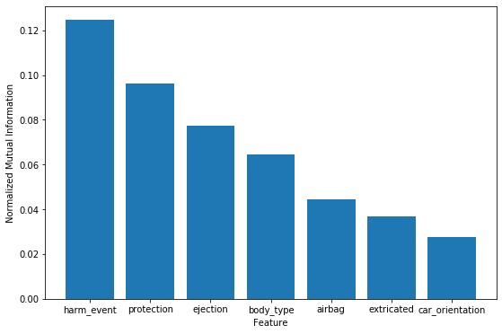

Introduction
Road incidents are one of the leading causes of death worldwide. Automobile companies constantly try to innovate their safety mechanisms to minimize the risk of such injuries and fatalities. Often these focus on mitigating damage once an accident has already occurred, such as improved air bags. However, it is also important to analyze the factors that go into causing fatal accidents such as driver behavior, environment, etc. The goal of this project is to identify the components that are reliable predictors of accidents and use them to predict injury level.
The data set used in this analysis comes from the Fatality Analysis Reporting System (FARS) run by the National Highway Traffic Saftey Administration (NHTSA). The data is collected on crashes that occur throughout the US and includes all crashes resulting in injury or fatality in 2018.
Data Set
The full data set includes a wealth of information on outcomes for each vehicle and person involved in the crash, as well as a number of variables relating to the crash and the emergency response. The below analysis is done by person and includes factors that were selected as the most likely to predict level of injury. Factors that occured after the crash, such as emergency response time and time of death were ignored. The outcome for each person has 5 possible levels of injury, "No Apparent Injury", "Possible Injury", "Suspected Minor Injury", "Suspected Serious Injury", and "Fatal Injury". When incomplete data was trimmed from the set the final data had 17 input features and 60,000 data points.
Data Formatting
Data formatting ...
Analysis Methods
Preliminary data analysis focused on choosing the relevant factors to remove extraneous factors and to improve runtime of model training. Unsupervised methods used included Mutual Information to select most relevant columns of data and PCA to reduce data set and speed up model training. In some models the possible outcomes were grouped into 3 outcomes, "No Injury", "Injury", and "Fatality". Catagorical factors were expanded with binary dummy variables to allow for inclusion of all possible factors. Supervised learning methods were used on the final data set to predict the injury level of people in the test data set. Methods tested include Decision Trees, Neural Networks, SVM, and GLM to classify each person by injury level.
Mutual Information Analysis
The above plot shows the normalized mutual information between each of the dataset features and the injury severity. The top 7 features are pictured out of 16 tested. This shows that the 3 best features for determining the injury level are the first harmful event in a crash, the use of protection by the person, and whether the person was fully or partially ejected from a vehicle. This suggests that in order to prevent injury in crashes focus should be placed on making sure that all passengers are using appropriate protection, and in ensuring redesigning vehicles to ensure that occupants are not ejected.
Confusion Matrix

The above confusion matrix shows the ability of our model to predict the correct injury level of a person involved in a crash.
Influence of K Values of Model
The above chart shows the influence of K values on the model.
Output vs Best Feature
The above chart shows the relationship between the output and the best feature.
Output vs Worst Feature
The above chart shows the relationship between the output and the worst feature.
Conclusions
Each model was trained and tested using 5 fold cross validation to assess effectiveness at predicting injury level of a person. With 3 injury levels the highest prediction accuracy was 71% using linear SVM with the [parameters]. Each model was tested with a number of different parameteres to determine the best set, as described below. Given the large number of factors that involved in a crash and the level of randomness in how injuries occur, these levels of prediction accuracy are considered high.
References
- Chunjiao Dong, Chunfu Shao, Juan Li, and Zhihua Xiong, “An Improved Deep Learning Model for Traffic Crash Prediction,” Journal of Advanced Transportation, vol. 2018, Article ID 3869106, 13 pages, 2018. https://doi.org/10.1155/2018/3869106.
- F. L. Mannering and C. R. Bhat, “Analytic methods in accident research: methodological frontier and future directions,” Analytic Methods in Accident Research, vol. 1, pp. 1–22, 2014.
- Chong, Miao & Abraham, Ajith & Paprzycki, Marcin. (2005). Traffic Accident Analysis Using Machine Learning Paradigms.. Informatica (Slovenia). 29. 89-98.